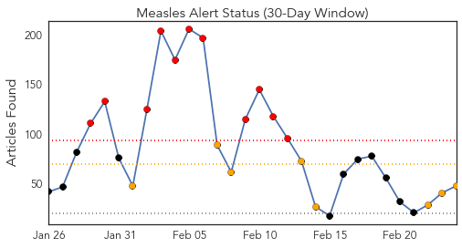
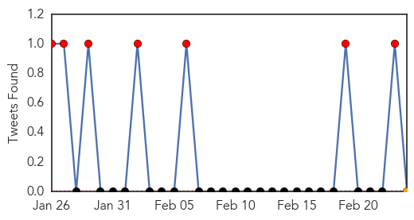
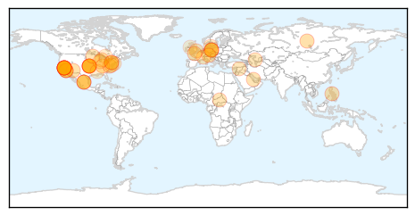

Measles
30-Day Web Trend
11 alerts, 8 warnings

30-Day Twitter Trend
7 alerts, 0 warnings

Article Locations
Article Confidences
Top Articles:
- 0.998
- California Reports No New Measles Cases Since Last Update
- 0.986
- Berlin counts 254 new cases of measles in 2015
- 0.981
- Measles outbreak continues nationwide — Sonoma State Star
- 0.978
- Conspiracy Theorist: 2/24
- 0.978
- Neil Miller: Why people choose not to Vaccinate
- 0.971
- American parents are increasingly choosing fear over science
- 0.966
- California reports four more measles cases in Disneyland outbreak
- 0.963
- California reports four more measles cases in Disneyland outbreak, Americas News & Top Stories
- 0.963
- Toddler dies of measles in Berlin, first death in outbreak
- 0.959
- News Scan for Feb 23, 2015
- 0.954
- German authorities to boost vaccination rates after toddler dies from measles
- 0.946
- Before you get your kids vaccinated - get informed about the risks: Alison Mullins
- 0.942
- As flu season winds down, health officials continue to encourage
- 0.940
- Fifteen Years After A Vaccine Scare, A Measles Epidemic
- 0.940
- Mandatory Vaccinations: State of the Union
- 0.938
- Coeur d'Alene Press: Local News
- 0.935
- Princeton University Measles Case Confirmed
- 0.925
- Undocumented immigrants not responsible for measles outbreak: CDC officials
- 0.923
- Four More Measles Cases in California
- 0.922
- CDC Official Dismisses Claim That Undocumented Immigrants Bring Measles Into The U.S.
- 0.914
- A new threat appears along the U.S.-Mexico border: Americans with measles
- 0.914
- Leach bill aims to end philosophical exemption from vaccines
- 0.906
- I Was on the Front Line of L.A.'s Last Measles Outbreak
- 0.901
- 4 New Measles Cases Reported in California
- 0.877
- As measles spreads, concern over unvaccinated children does, too
- 0.873
- Toddler dies as measles outbreak hits German capital
- 0.860
- Measles kill toddler as Berlin school closes
- 0.854
- Measles death in Germany prompts calls for mandatory vaccinations
- 0.850
- Protect yourself from measles
- 0.847
- Measles outbreak in U.S. tops 150 cases
- 0.842
- WHO Launches Billion-Dollar Health Appeal for Four Countries
- 0.841
- Aliso Niguel High School
- 0.837
- Test results suggest child does not have measles, Allegan County health officials say
- 0.837
- Answers to your questions about the measles outbreak
- 0.827
- Spotty logic undermines argument for measles vaccine
- 0.814
- WHO Launches Billion-Dollar Health Appeal for Four Countries
- 0.814
- Vaccination against measles in Kazakhstan puts teenagers into hospital beds. Health. Tengrinews.kz
- 0.813
- WHO Launches Billion-Dollar Health Appeal for Four Countries
- 0.797
- Proposed Law Could Take Away ‘Personal Belief’ Vaccine Exemptions in California
- 0.794
- Measles Outbreak Has Nothing To Do With Illegal Immigration
- 0.714
- Vail Daily column: Start by washing your hands
- 0.688
- dr.dk/Nyheder/Andre_sprog/English
- 0.687
- Majority of Americans Think They Should be Required, Poll Shows
- 0.621
- Infant death sparks measles jab debate
- 0.603
- WVU expert says West Virginia sets example for controlling infectious disease
- 0.580
- Vaccine needed for selfishness, hysteria and stupidity
- 0.559
- Another case of measles confirmed in Ontario
- 0.524
- Measles death prompts vaccine call
- 0.506
- Measles death prompts vaccine call
Top Tweets:
-
No tweets found for Feb 24, 2015
Unknown
30-Day Web Trend
1 alerts, 0 warnings

30-Day Twitter Trend
0 alerts, 0 warnings

Article Locations

Article Confidences

Top Articles:
- 0.997
- Riyadh hospital closed for ignoring MERS guidelines
- 0.996
- the edge of knowledge
- 0.993
- MERS-CoV: UN warns of ‘critical knowledge gaps’
- 0.991
- WHO calls for action over Mers virus - Panorama
- 0.991
- Govt intensifies fight against Tyhpoid as more cases reported
- 0.985
- Chiayi gov't reports 3 new norovirus cases
- 0.973
- Hartland facility dealing with norovirus outbreak
- 0.943
- CDC Says New Tick-Borne Virus May Have Killed Kansas Man
- 0.940
- Who's sterilizing your surgical instruments; superbug on the rise in hospitals
- 0.922
- Moses Cone working to keep superbug from spreading to Piedmont
- 0.917
- Chicago Tribune
- 0.917
- Chicago Tribune
- 0.917
- Chicago Tribune
- 0.917
- Chicago Tribune
- 0.917
- Chicago Tribune
- 0.917
- Chicago Tribune
- 0.917
- Chicago Tribune
- 0.917
- Chicago Tribune
- 0.917
- Chicago Tribune
- 0.917
- Chicago Tribune
- 0.917
- Chicago Tribune
- 0.917
- Chicago Tribune
- 0.917
- Chicago Tribune
- 0.917
- Chicago Tribune
- 0.917
- Chicago Tribune
- 0.917
- Chicago Tribune
- 0.917
- Chicago Tribune
- 0.917
- Chicago Tribune
- 0.917
- Chicago Tribune
- 0.917
- Chicago Tribune
- 0.917
- Chicago Tribune
- 0.917
- Chicago Tribune
- 0.917
- Chicago Tribune
- 0.917
- Chicago Tribune
- 0.917
- Chicago Tribune
- 0.910
- The world windows to Thailand
- 0.900
- Suspected norovirus outbreak sickens 120 people in Taiwan
- 0.882
- California Lawmaker Requesting Congressional Hearing On Superbug Outbreak
- 0.868
- U.S. lawmaker seeks congressional hearing on 'superbug' outbreak – MassDevice
- 0.864
- REFILE-U.S. lawmaker seeks congressional hearing on 'superbug' outbreak
- 0.841
- Mysterious ‘Superbug’ Resistant To Antibiotics Has Resulted In 2 Deaths In North Carolina
- 0.799
- Pinamungajan typhoid outbreak, water source tested positive of coliform
- 0.791
- Mystery disease turns out to be malaria
- 0.753
- Superbug cases reported in North Carolina; 1 dead
- 0.750
- A Doctor's Advice, a Patient's Race Influence Flu Shot Rates
- 0.736
- First tests clear 100 of TB at childcare centre
- 0.732
- Superbug cases reported in North Carolina; 1 dead
- 0.722
- Studies linking fluoride in water to health issues prompt Australian review
- 0.714
- Charlotte man says superbug killed mom more than 1 year ago
- 0.693
- Samples taken from two kids sent to Lucknow for polio tests
Showing top 50 articles...
Top Tweets:
- 0.601
- RT: FLU SCAN: H7N9 infections in China, more H5N1 cases in Egypt, global flu update http://t.co/aiQEev5Eq4
- 0.546
- RT: So corona virus MERS is getting serious ... MOH ( ministry of health ) just send me an SMS .. http://t.co/snBz0mXpps